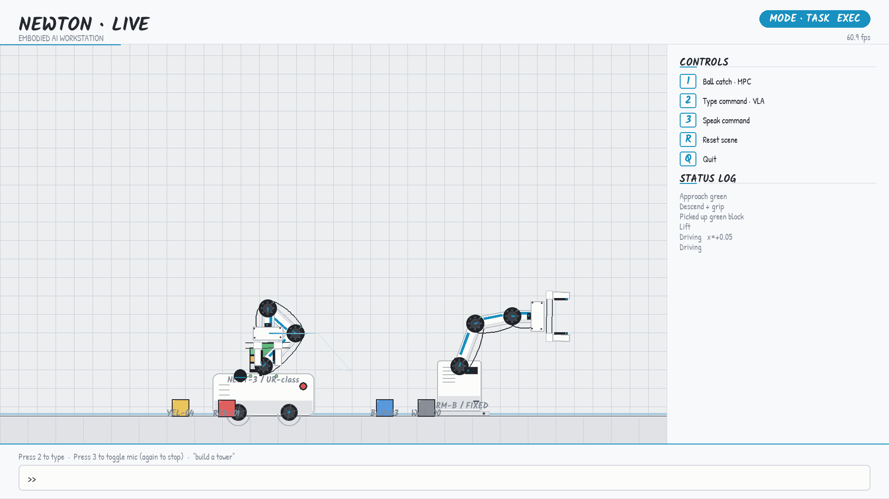
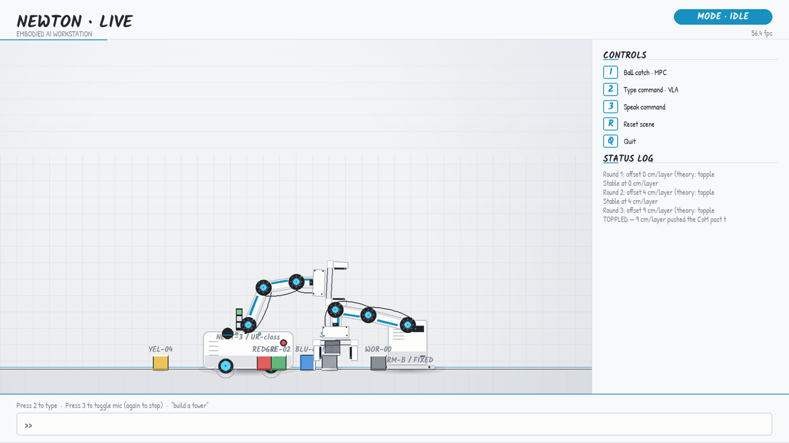

SHT 03 /05 — THREE INTERACTION MODES



A 3-minute classroom demo of embodied AI: Newton XPBD rigid-body physics, Claude as the vision-language-action brain, 60 fps CPU-only. No GPU, no cloud.
SHT 02 /05 — CONTROL LOOP · FEEDFORWARD + SLOW FEEDBACK
A foundation model takes seconds; a 60 fps stage gives you 16.7 ms. The demo decouples them: a deterministic keyword feedforward starts the arm in ~1 ms, Claude returns later as a slow feedback branch and reconciles — a generation counter keeps stale results from clobbering newer commands. The audience perceives instant response with intelligent backfill.
SHT 03 /05 — THREE INTERACTION MODES


SHT 04 /05 — STABILITY LAB · CENTER OF MASS vs SUPPORT
Equal cubes of height h = 200 mm: the top two layers' combined center of mass sits 1.5 d off the bottom block, so the tower must topple once d > h/3 ≈ 67 mm. 40 survives. 90 falls. The verdict here — like in the demo itself — is computed by the physics engine, not scripted.
In the live demo (make experiment) the right arm runs this same lecture with real rigid bodies: stack at 0 → 4 → 9 cm per layer, settle, verdict, tidy up, repeat. A regression test pins the 4-vs-9 cm bracket against the XPBD solver so the climax can never silently break.
SHT 05 /05 — ARCHITECTURE · 7730 LINES, 238 TESTS
| MODULE | ROLE | LINES |
|---|---|---|
| __main__.py | pygame loop · events · dispatch | 1358 |
| physics.py | Newton world · real-blocks grasp | 660 |
| vla.py | Claude CLI · keyword fallback | 467 |
| tasks.py | pick / place / stack / gestures | 432 |
| catcher.py | MPC ballistic intercept | 271 |
| experiment.py | stability lecture coordinator | 194 |
| collab.py | two-arm relay coordinator | 167 |
+ scene/ renderers, voice, telemetry, effects… full table ↗
| SCENARIO | AVG FPS | SAMPLES |
|---|---|---|
| IDLE 20 s | 60.7 | 1211 |
| Scripted catch | 59.6 | 594 |
| Scripted VLA + real blocks | 56.9 | 1132 |
| Collab relay 90 s | 55.0 | 4918 |
| Collab + real blocks 90 s | 56.8 | 5090 |
Apple Silicon, CPU-only · physics 0.3 ms/frame teleport · ~5 ms real-blocks